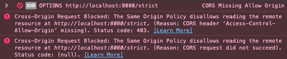

Stefan Bissell
Ever seen this?
Cross-Origin Resource Sharing (CORS)
is a feature of Javascript.
Simply because it can make
HTTP requests to any URL.
An HTTP request becomes CORS
if the target URL is different from the
page which loaded the script.
Some use cases: